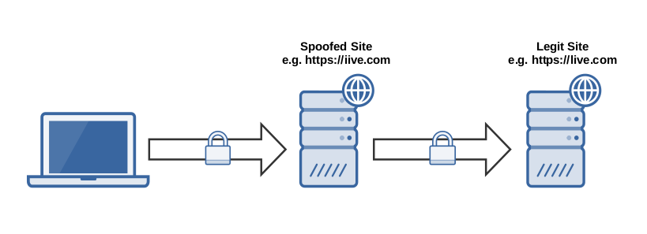
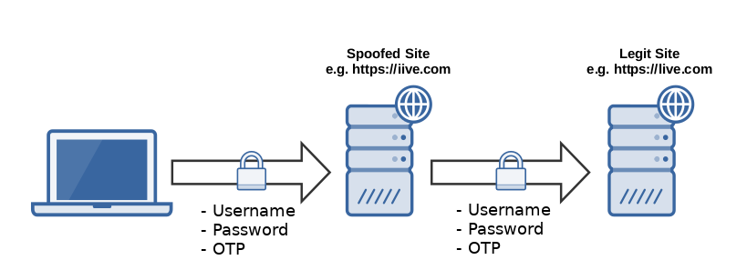
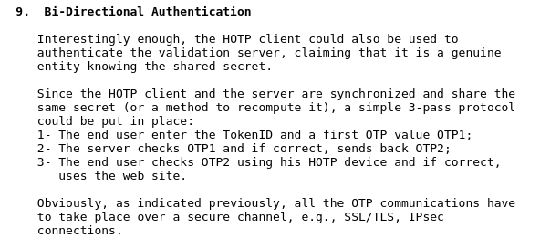
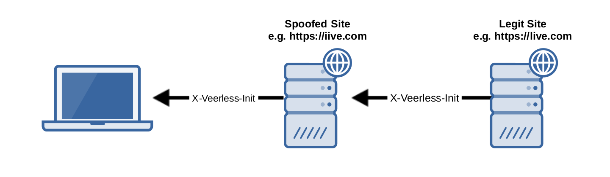
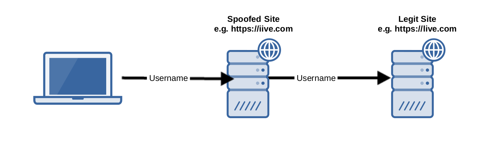
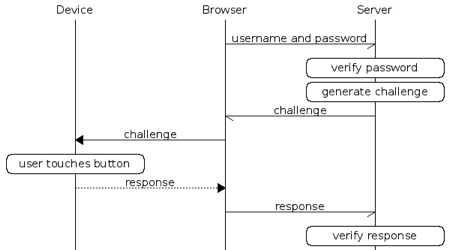

No Gifs or Memes Inside
*
.
Two-Factor Authentication: Demand Bi-Directional
BSides Vancouver 2017
TLDR;
Users
Request Bi-Directional two-factor from your authentication providers
Developers and Security Experts
Hardening just the server is not good enough
Give users better tools to verify that they are actually talking with the entity that they registered the creds with!
How Event based OTP schemes work
Counter based One-Time-Pads
e.g. HOTP - counter based
$Truncate(HMAC(secret, counter))$
Time based One-Time-Pads
$Truncate(HMAC(secret,\lfloor{(\frac{t_{Now} - t_{Init}}{t_{Period}})}))$
What is the problem?


This is an example of a homoglyph attack, but DNS hijack would be another example
Did we encounter this before?
Demo 1 : 2FA phishing
Desired features of the solution.
Prevents an attacker from stealing a user's credentials
DNS hijack attacks
Homoglyph hostname attacks
Protects static inputs with variable inputs
Technology independent
†
Adds no more friction to the current user experience
A Proposed Solution
RFC 4226
~ December 2005



X-Veerless-Response
$Truncate(HMAC(secret,\lfloor{(\frac{t_{Now} - t_{Init}}{t_{Period}})} || ipBlock))$
Demo 2 :
Veerless resisting a homoglyph attack
Design choices
Google Authenticator approach
Browser plugin approach
A hybrid implementation
Benefits
Credential Phishing
Corrects the User Trust Model
Challenges
Client needs access to DNS resolution API
Compromises between usability and secure isolation
User Adoption
Password only systems might be a problem
Other Directions
Miracl's M-Pin Full
YubiKey U2F

Contact
*I Lied.
@joekir
@josephkirwin